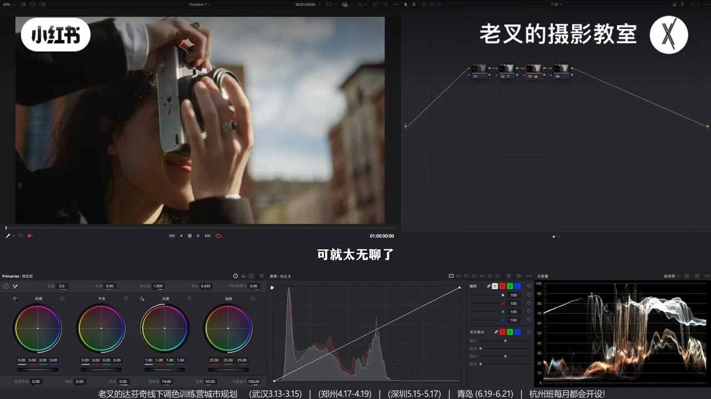
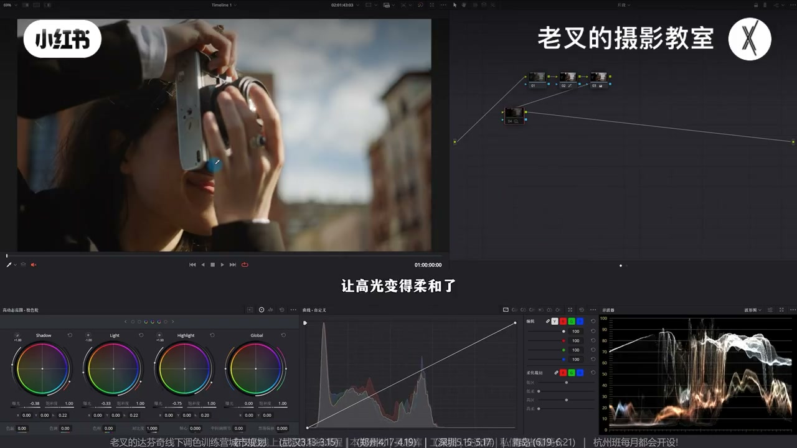
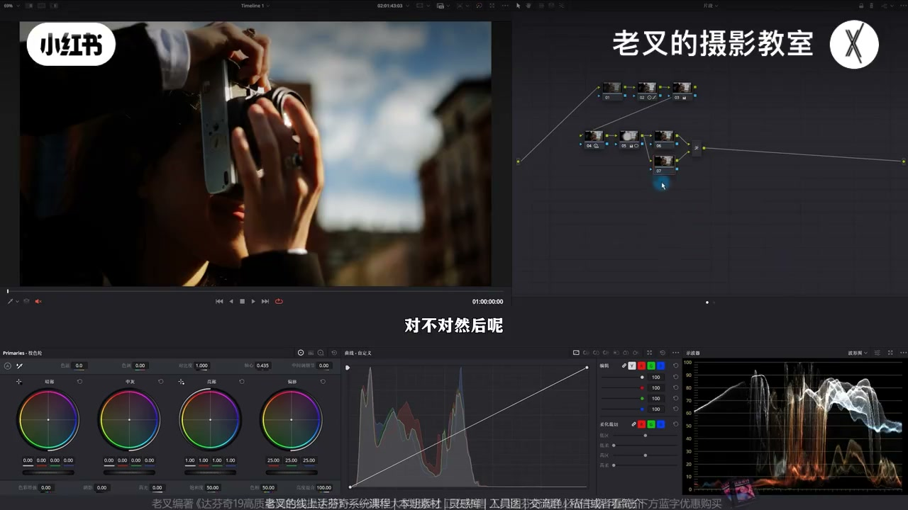
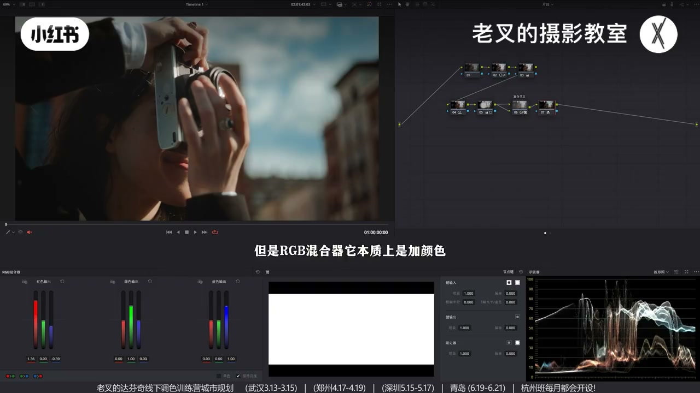
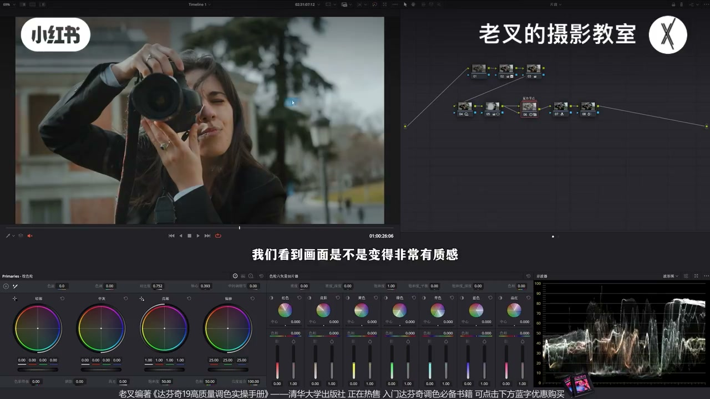

内容要点
画面「无聊」、颜色浮在表面，常因高光与暗部饱和都太重。高级感准则：饱和度按曝光分级呈淡→浓→淡。先 HDR 分区降曝光柔化夕阳高光，反转遮罩压四周护光感；核心技巧是图层节点改叠加 + 下层 RGB 混合器勾选单色/黑白，再打成复合节点用键输出增益与对比度收力度——低饱和同时影调变强，颜色仍在。最后可 RGB 青橙并用密度优化天空蓝。多素材验证不挑画面。
知识结构
无聊＝颜色浮艳+层次不够；饱和度应按曝光淡-浓-淡。
HDR 按力度降 Shadow/Light/Highlight 柔高光；反转遮罩压四周。
图层叠加 + RGB 混合器单色 → 复合节点；键输出增益与对比度收力度。
RGB 混合器青橙；六相加蓝青密度降饱和，蓝带灰质更耐看。
有明确亮暗即可；多例开关复合节点见质感跳变。
高级感不只降饱和：先让影调有慵懒分区，再用「叠加+单色复合节点」按曝光重分配饱和，颜色保留、浮艳消失。力度用键输出增益收；青橙等风格放后面，过艳的蓝用密度压耐看。
00:00-01:04缺质感：颜色浮在表面
很多人觉得自己调的缺质感、无聊。先简单还原：曲线高光与暗部拉到位，三号略加饱和。拍得不错却无聊——很大原因是颜色过于浮在表面、各区都太鲜艳，层次也不够。
高级感准则：高光饱和别太重，暗部饱和也别太重；饱和度按曝光分级从淡到浓再到淡，影调之外再多一层层次。仍按先调光后调色。

01:04-02:43夕阳影调：HDR 柔高光 + 压四周
夕阳要高光柔和、整体曝光可降，尤其中灰要暗才有层次。HDR 按不同力度依次降：Shadow 少降、Light 少降、Highlight 多降——层次大致保持而高光变柔，符合慵懒感。这不等于全局降曝光：曲线以某点为中心两侧衰减，偏移类全局轮力度近似一致，实现不了按区力度差。
数值不必抄，降到观感舒服。人物遮罩反转，降阴影压四周并略抬高光，护自带光感物体。别让画面哪哪都亮（像手机直出）。

02:43-04:12核心：叠加 + 单色 → 复合节点收力度
开关对比：操作后颜色不那么艳，影调更高级——不是单纯降饱和，肤色、天蓝、淡玻璃色都还在。做法：建节点，Option/Alt+L 建图层节点，合成改叠加（反差猛增）；选下层到 RGB 混合器勾选单色/黑白（20 版作「黑白」）→ 低饱和+影调极强。
力度过大则三件全选右键复合节点，在键输出里降增益到合适；一级轮可再略降对比、调轴略暗。简单好用，不太挑素材，力度按目标自调。

04:12-05:08可选青橙：RGB 混合器 + 蓝密度
素材已传平台。颜色可再优化：新节点 RGB 混合器提高红输出中的红、降低蓝，快速青橙色调。但本质是加色，天空青蓝易过重——再节点六相切片加蓝青密度并降饱和，蓝不艳不腻、带灰质更耐看。

05:08-05:55多素材验证：有明确亮暗即可
思路不挑画面，只要有明确影调与亮暗。另两例参数几乎不动：开第二排节点整体提升明显；单开复合节点，人物不再泛红浮艳，过艳区域质感大增。三素材都可领取练手。

完整转录（214段）
以下文本由 Whisper medium 模型自动转录，可能存在少量识别误差，已尽可能修正。
还是会有很多朋友对自己调出来的画面总感觉缺了点质感对吧
看着很无聊
那今天分享一个小技巧
非常实用
我们看到这个画面
我们给他先做一下还原
还原非常简单
给他用曲线高光拉到位
然后AMP也给他拉到位
然后再在3号节点给他加一点饱和度
简单一做就给他做好了还原
这没什么特殊的
但是我们在还原之后看画面
拍的其实非常不错
可就太无聊了
画面不高级的很大原因
就是因为你的颜色过于浮在表面
你每一个区域的颜色都过于鲜艳了
同时画面层次也不够
其实我们要知道很多时候
想要让你的画面高级
要遵循一个准则
就是你的高光区域的饱和度不要太重
暗部的饱和度也不要太重
其实说白了
就是你的画面中的饱和度也得依照曝光的分级
来给它从淡到浓再到淡
你这样的一个分布层次
才能够让你的画面除了影调以外
还能有别的因素带来更多的层次感
但是我们调色点
按照先调光后调色的逻辑
所以我们可以先处理好影调关系
首先我觉得这个画面既然是夕阳画面
我们自然是要让它的高光柔和一点
也就是让高光暗一点
整体的曝光也可以往下降
特别是中会很暗
不然的话它的层次就是不够的
我们就可以用HDR色轮
按照不同的降低力度去依次降低
比如说我先降低一点Shadow色轮
少降一点
然后再降低一点Light色轮
同样也少降一点
不要太多
最后我们再多降一点Highlight色轮的曝光
以这样的结果我们看
画面层次保持不变的同时
让高光变得柔和了对不对
这样的感觉更符合夕阳那种慵懒的效果
要注意这个行为
它不等同于我们全局降低曝光
全局降低曝光它的降低的力度
如果你用曲线的话
它可能是以某一个点作为中心力度最大
然后往两侧去扩散逐渐减小
但如果说你用的是偏移色轮
这种全局色轮的话
它全局曝光降低的力度会大体一致
那这样就实现不了
我们想要去按T度降低曝光的一个目的了
我们要调整的这个参数的数值
大家也没必要去抄
重点是在于我们通过画面结果来判断
降低曝光的力度
降到你认为舒服的那个程度就行了
然后我们为了突出主体
可以给人物画一个遮罩
然后把它反转了
我们可以把四周的曝光
给它再往下压一压
我这里选择的是降低阴影滑块
还是那句话
要压按就不能只压
你还得提亮
所以我再提高了点高光滑块
让这些本来就带有光感的东西
不要让它失去太多的光感
好 大概是这个程度
我们来看一下这两个节点的调整
是不是让画面开始带上
有一点点风格的感觉了 对不对
整体其实也好了很多
你不要让你的画面哪哪都亮
你如果都亮的话就像手机拍的
然后就来到最关键的一步
我们先看结果
这是操作前的画面
这是调整后的画面
你看
画面是不是颜色变得没有那么艳丽的同时
影调好像也变得高级了 对吧
重点是
我们不是单纯的降低饱和度
任何物体的颜色其实都还是有保留的
不管是人物的肤色还是天空的蓝色
以及别的地方的颜色
这里一点点非常淡的这个玻璃的颜色
都是保留的
效果还是挺不错的 对吧
那又怎么建立呢
其实非常简单
我把这个删了
我们重新来一下
先建立一个节点
然后按住 Alt 或者是 Option 加 L
建立一个涂色节点
然后将合成模式改成叠加
那此时画面整体就加了非常多的一个反差
对不对
然后再选中下面这个节点
来到2GB混合器
勾选单色或者是黑白
这个20版本应该是黑白
那此时画面就变成了
低饱和的同时影调特别强的一个结果
对不对
虽然整体画面变得更加立体了
但这个力度太大了
所以我们可以把这三个东西全选
然后右键创建复合节点
此时它就变成了一个独立的节点
那对于力度太强
我们自然就可以稍微降低点键输出
在这个地方有个键
在下面第二个选项中有个键输出
把增益降低
降到你认为合适的那个力度为止
好
我就到这个程度差不多
然后再在一级校色轮中
稍微降低点它的对比度
根据你的需求来降
轴心也可以根据你的需求
去做适当的调整
我觉得让它稍微暗一点
好
大概到这个程度
那这样的效果就好了
对不对
很简单
非常好用
而且这个并不挑你的素材
当然这些调整的力度
你们可以根据你的目标结果来自行调整
素材我也传到了现场分享平台
大家可以私信或者看我简介来加入
免费自取
还有打分级的线上系统课程
和线下调色训练营
再然后我觉得颜色可以再优化一下
比如说我们给它来一个青橙色调
再创建一个节点
来到RGB混合器
提高红色输出中红色通道的数值
再降低蓝色通道的数值
这样一调
我们快速给画面加了一个青橙色调
对不对
但是RGB混合器它本质上是加颜色
这就会导致天空的青蓝色加的太重了
所以我们可以再来一个节点
用色轮60张切片工具
增加一点蓝色和青色的密度
同时也降低点它们的饱和度
让这个蓝色不要太艳
不要太腻
整体还是希望它能够更加耐看的
这样一调
这个蓝色就被我们优化的比较不错了
对吧
这种带一点灰质的蓝
其实会更加耐看
这样我们就把画面从这样调成了这样
效果还挺好的
对吧
而且非常非常方便
最重要的就是我们这个思路
它不挑画面
只要你的画面有明确的影调关系
有明确的亮与暗面都可以实现
比如说这个画面
这是还原后的结果
我们给它直接开关
第二排所有的节点
我参数基本没怎么调
你看它能够带来一个不错的效果
如果说我们单纯的开关
这个复合节点的变化的话
我们看到画面是不是变得非常有质感
特别是人物
它不会像原本这种有非常艳的
浮在表面的这种泛红
效果还是不错的
或者是看到这个画面
同样我们先把下面第二排
所有的节点都打开了
这个效果也挺好的对吧
然后我们再单独开关一下这个复合节点
这个是没做之前
这是做了之后的
我们看到整体的画面变得
特别是颜色特别艳的这一块
质感增加的非常好
而且画面中不会有特别艳的东西存在
整体的一个效果还是不错的对吧
这三个素材我都传了
大家别忘了联系之后练练手
讲到这里
如果觉得对你有帮助的话
还希望多多赞联
好了 这期就到这里
886